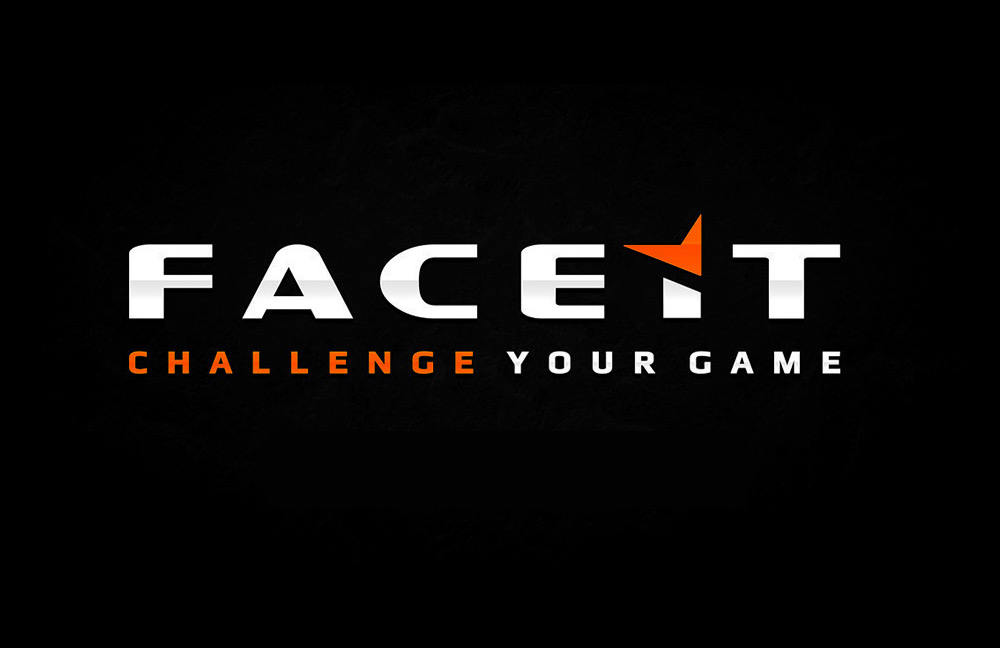

FACEIT is a third-party competitive platform that offers structured matchmaking for Overwatch 2 players. Unlike the in-game ranked system, FACEIT provides dedicated servers, anti-cheat measures, and prize pools for top competitors. This system helps bridge the gap between casual competitive play and professional esports.
The Overwatch AI Coach is a project that uses machine learning to analyze player gameplay and give advice improve. By tracking gameplay statistics, heatmaps, and decision-making patterns, the AI provides personalized recommendations to help players improve.
Coming out in 2077